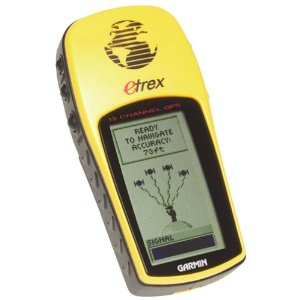
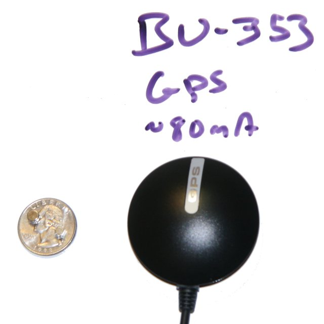

Now we get to the actual GPS Unit.
I did my prototyping with the Garmin Etrex GPS

However, this GPS likely could not be used with Raspberry Pi, as the Garmin is: (a) bulky, and takes separate batteries, and (b) the Garmin protocol would take a more work than it is worth to support, and likely would not pay off with other projects. (This custom protocol is very interesting - interesting in that it tries to be more precise, support maps, planning, and points of interest.)
So this led me to prototype #2 for the project. My criteria? USB or Serial, reasonable power, cheap so that if it doesn't work for me, I won't feel too sad, and on the Raspberry Pi Verified Peripheral list.
The GPS I selected is the GlobalSat BU-353-S4.

I'm am reusing a few key procedures (albeit modified) from the DIY Drones NMEA parser. It supports the same records my GPS does, so I have that going for me.
The next steps are to incrementally put together the execution environment. The Raspberry Pi development board has problems and challenges (more on this later). This makes it more productive and satisfying to get a few pieces working on the Raspberry Pi, and do most of the work on the PC. As the Pi issues are resolved, migrate more of the processing to the Pi.